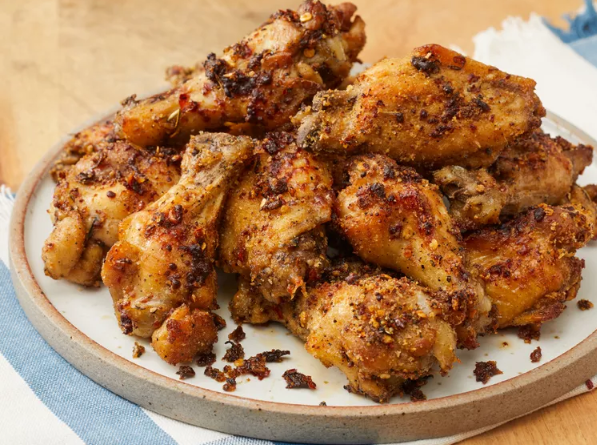

Garlic Parmesan Chicken Wings

Overview
Keep these baked garlic parmesan chicken wings crispy by parboiling the wings in a flavorful liquid, which helps season the chicken and produce a surface texture in the oven that your guests will swear came straight out of a deep fryer. Serve with creamy Italian dressing for dipping.
Try this homemade Garlic Parmesan Chicken Wings recipe today!
Homemade Garlic Parmesan Chicken Wings Ingredients
These are the ingredients you'll need to make this top-rated homemade Garlic Parmesan Chicken Wings recipe:
- cooking spray
- 3 quarts cold water
- ⅓ cup balsamic vinegar
- ¼ cup salt
- 1 bay leaf
- 1 teaspoon dried thyme
- 1 teaspoon dried oregano
- 1 teaspoon dried rosemary
- 8 cloves garlic, minced
- 1 pinch salt
- 3 tablespoons olive oil, or as needed
- 1 tablespoon freshly ground black pepper
- 2 teaspoons red pepper flakes, or to taste
- 4 pounds chicken wings, separated at joints, tips discarded
- 2 tablespoons fine bread crumbs
- 1 cup finely grated Parmigiano-Reggiano cheese, divided
How to Make Homemade Garlic Parmesan Chicken Wings
Making homemade Garlic Parmesan Chicken Wings much easier than it looks. You'll find the full, step-by-step recipe below:
- Preheat an oven to 450 degrees F (230 degrees C). Line a baking sheet with aluminum foil and coat foil with cooking spray.
- Combine water, vinegar, 1/4 cup salt, bay leaf, thyme, oregano, and rosemary in a large stockpot and bring to a boil. Add chicken wings, return to a boil, and cook for 15 minutes. Remove chicken wings with a slotted spoon to a cooling rack and allow to dry for 15 minutes.
- Mash garlic and a pinch of salt together in a mortar and pestle until smooth.
- Combine mashed garlic, olive oil, black pepper, and red pepper flakes in a large bowl.
- Add chicken wings and bread crumbs; toss to coat. Sprinkle with 1/2 cup Parmigiano-Reggiano cheese.
- Transfer to the prepared baking sheet and sprinkle with remaining 1/2 cup Parmigiano-Reggiano cheese.
- Bake in the preheated oven until browned, 20 to 25 minutes.
- Serve hot and enjoy!